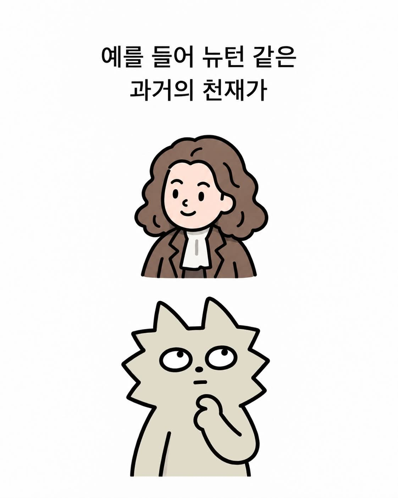
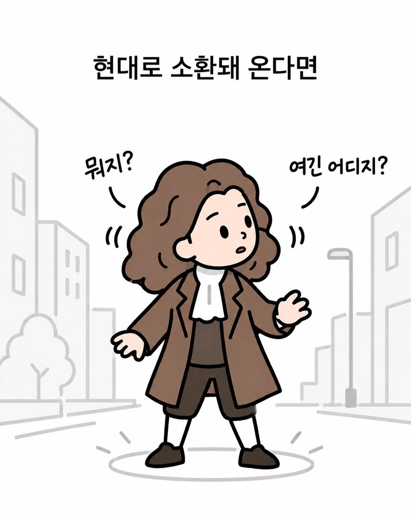
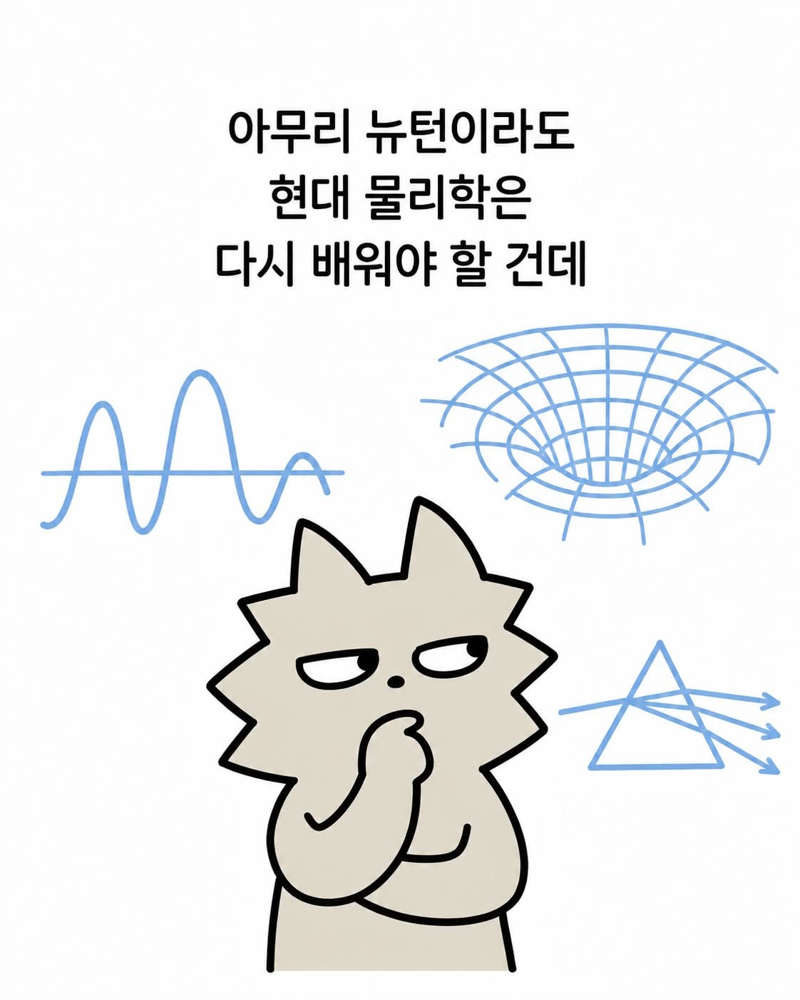
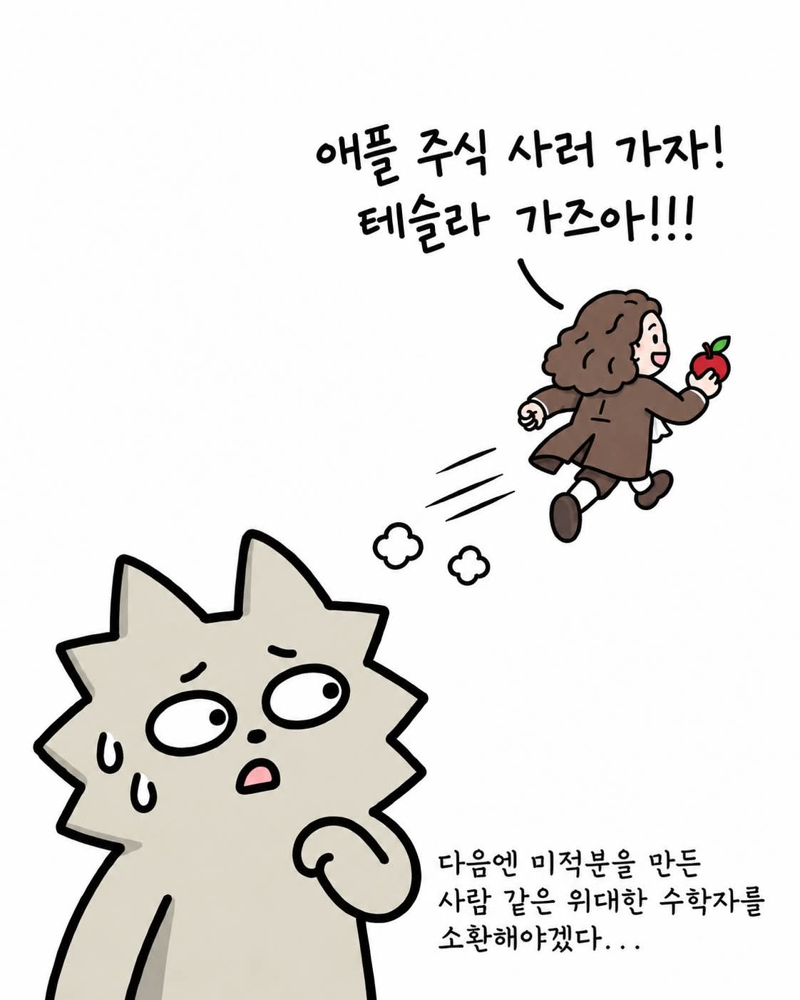

https://www.facebook.com/share/p/14pDYUKVZKA/




https://www.facebook.com/share/p/14pDYUKVZKA/




뉴턴급 괴물들은 훑어볼 시간 + 연구할 도구에 익숙해질 시간만 주어지면 뭘해도 해놓을듯
다빈치가 궁금함
ㅅㅂ 당연히 옛날 웹툰 내용이겠거니 했는데
워니 아저씨 아직도 그림 그리고 있었네
과학자보단 베토벤이나 쇼팽, 슈베르트가 궁금함
네이버시리즈나 카카오페이지 보면 현대에 나타난 과거예술가 존나 많음ㅋㅋㅋ
기본빵은 하는 사람들이라서 현대기술로 개쩌는 활동한다고 묘사함
천재가 좆으로 보이나
뉴턴이면 저럴만 해 ㅋㅋㅋ
뉴턴 전생에서도 남해회사 주식투자했다가 말아먹은 사람임...
닥터스톤이 딱 이거랑 비슷한 느낌임
환경이 중요할거같음
지금도 중국이나 인도에 저정도 천재가 있을거 같은데
아인슈타인이 제일 신기함
어떻게 시간이 중력에 따라 다를꺼라고 생각할수가 있는거지
분명 골반환상곡이였는데;
뉴턴이면 주식으로 거지되겠네
뉴턴 레버리지 땡기다가 한강에서 리셋버튼 누르셨읍니다.
유골에서 dna 채취해서 복제인간 대군 드가자
거인이 너무 커져서 어깨까지 올라가는데 시간이 너무 많이 걸림.
미적분을 만든 위대한 수학자... 뉴턴...
현대에는 환경이 더 좋아서 저런 천재들이 더 많겠지?